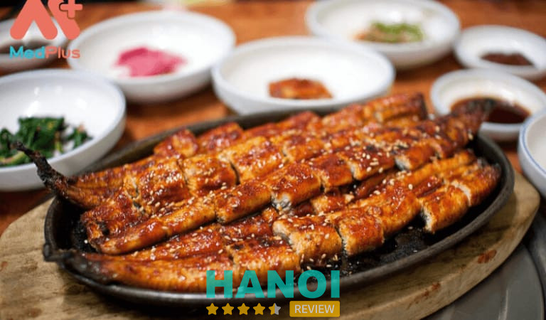
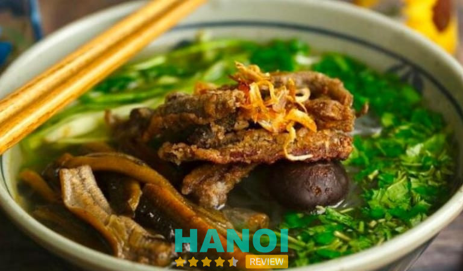
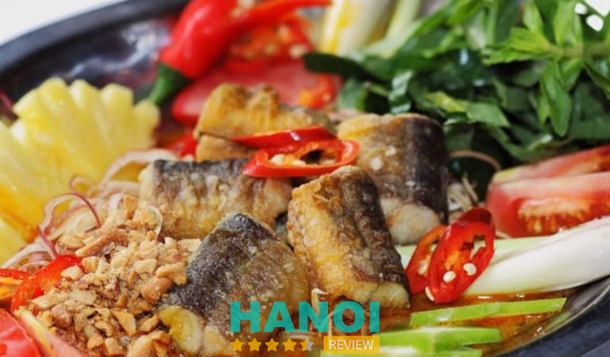
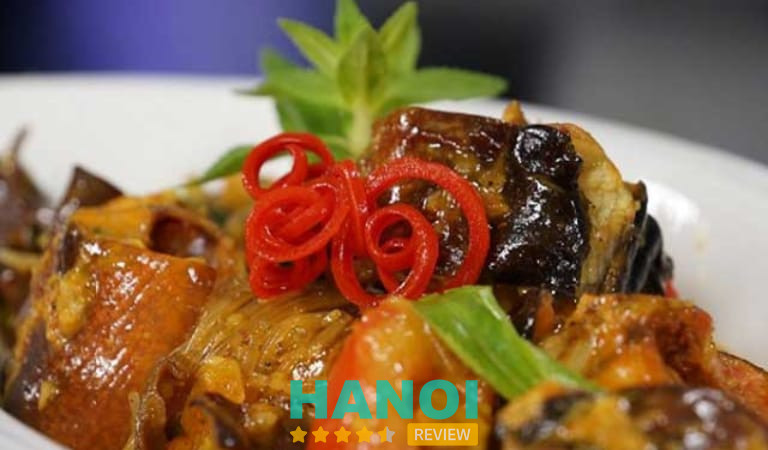
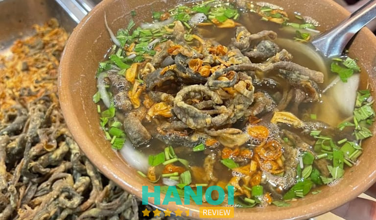

10 Quán lươn ngon tại Hà Nội chuẩn vị, không thể bỏ qua
Đâu là quán lươn ngon tại Hà Nội chuẩn vị, không thể bỏ qua là câu hỏi được nhiều người quan tâm. Bạn nên tìm hiểu thật kỹ xem đâu là nơi chuyên bán món lươn uy tín nhất để thưởng thức và đảm bảo an toàn vệ sinh.
Top 10 cửa hàng bán món lươn hấp dẫn nhất khu vực Hà Nội
Lươn là nguyên liệu quý trong ẩm thực Việt Nam, không chỉ bởi hương vị thơm ngon mà còn bởi giá trị dinh dưỡng cao. Với thịt mềm, thơm và béo, lươn có thể chế biến thành nhiều món ăn đa dạng, từ dân dã đến cầu kỳ.
Mỗi món đều mang một hương vị đặc trưng, đậm đà bản sắc ẩm thực vùng miền. Chính vì vậy, lươn luôn là lựa chọn hàng đầu trong thực đơn của nhiều gia đình Việt. Nếu bạn đang có nhu cầu tìm kiếm đơn vị bán món lươn hợp vị tại Hà Nội thì bạn có thể tham khảo qua 10 gợi ý dưới đây.
Lươn 34 Yên Ninh
Quán lươn 34 Yên Ninh là một địa chỉ nổi tiếng ở Hà Nội, chuyên về các món lươn. Đây là quán lâu đời và được nhiều thực khách yêu thích nhờ vào hương vị đậm đà và chất lượng của món ăn. Nếu bạn là người yêu thích các món lươn, quán này chắc chắn là một địa chỉ đáng để ghé thăm.
Quán chuyên sử dụng lươn tươi từ Nghệ An, nơi nổi tiếng với lươn đồng, nên các món ăn đều giữ được hương vị đậm đà, thịt lươn dai và ngọt. Thực đơn của quán cũng rất phong phú với nhiều món ăn từ lươn như cháo lươn, miến lươn, lươn xào sả ớt, lươn om chuối đậu.
Điều này mang đến nhiều lựa chọn cho thực khách. Thêm vào đó, các món ăn tại quán được chế biến theo công thức truyền thống, giữ được hương vị đặc trưng của lươn Nghệ An, đậm đà và vừa miệng.
Một điểm cộng nữa dành cho quán đó là có không gian rộng rãi, thoáng mát, được giữ vệ sinh tốt, mang lại cảm giác thoải mái cho khách hàng. Đội ngũ nhân viên phục vụ cũng rất chu đáo, thân thiện và nhanh nhẹn, đáp ứng tốt nhu cầu của khách hàng.
Nếu như so với chất lượng món ăn và dịch vụ, giá cả tại quán Lươn 34 Yên Ninh được xem là khá phải chăng, phù hợp với nhiều đối tượng khách hàng.
Quán nằm ở trung tâm Thành Phố Hà Nội, dễ dàng di chuyển, tìm đường, phù hợp cho cả người dân địa phương và du khách. Chính sự kết hợp giữa chất lượng món ăn, dịch vụ tốt và không gian thoải mái đã khiến quán Lươn 34 Yên Ninh trở thành một địa điểm ăn uống được nhiều thực khách ưa chuộng.
Thông tin liên hệ:
- Địa chỉ: 34 Yên Ninh, Trúc Bạch, Q. Ba Đình, TP. Hà Nội
- Điện thoại: 0914 626 688
- Fanpage: FB.com/QuanLuon34YenNinh
Xem thêm: 10 Địa chỉ bán nem chua rán ở Hà Nội nổi tiếng ngon nhất
Lươn O Quế
Quán Lươn O Quế là một trong những địa chỉ nổi tiếng tại Hà Nội chuyên về các món lươn đậm chất Nghệ An. Quán được yêu thích không chỉ bởi chất lượng món ăn mà còn bởi không gian giản dị, mang đậm phong cách miền Trung.
Quán sử dụng lươn tươi ngon được chọn lọc từ các nguồn cung cấp uy tín. Ngoài ra, các nguyên liệu phụ như rau củ, gia vị đều được kiểm tra kỹ lưỡng để đảm bảo chất lượng. Món lươn tại quán được chế biến theo công thức gia truyền, tạo nên hương vị đặc trưng mà khó tìm thấy ở những nơi khác.
Nổi tiếng với cách chế biến giữ nguyên hương vị đặc trưng của lươn xứ Nghệ. Các món ăn như cháo lươn, miến lươn, súp lươn đều được chế biến theo phong cách truyền thống, đảm bảo đậm đà và hấp dẫn.
Lươn thường được nướng trên lửa than, tạo ra lớp da giòn rụm và hương thơm đặc biệt. Lươn xào sả ớt cũng là một món ăn được yêu thích tại quán, với sự kết hợp hoàn hảo giữa lươn mềm và gia vị đậm đà. Nước dùng của các món ăn tại O Quế được nấu từ xương và các nguyên liệu tự nhiên, tạo ra sự hòa quyện hương vị đặc biệt.
Ngoài ra, quán có không gian đơn giản nhưng ấm cúng, với thiết kế gần gũi và sạch sẽ tạo cảm giác gần gũi tới khách hàng. Không gian quán tạo cảm giác thoải mái, phù hợp cho các bữa ăn gia đình hoặc gặp gỡ bạn bè.
Dịch vụ tại quán được đánh giá cao với đội ngũ phục vụ tận tình và nhanh nhẹn, sẵn sàng đáp ứng nhu cầu của khách hàng. Thực khách thường để lại những đánh giá tích cực về hương vị món ăn và trải nghiệm tại quán.
Nếu bạn yêu thích các món ăn từ lươn và muốn thưởng thức hương vị lươn Nghệ An truyền thống, Quán lươn O Quế chắc chắn là một địa điểm đáng thử.
Thông tin liên hệ:
- Địa chỉ: 210 Lê Trọng Tấn, Q. Thanh Xuân, TP. Hà Nội
- Điện thoại: 0965 260 000
- Email: nguyentrinhngoc92@gmail.com
- Fanpage: FB.com/luonoque
Súp lươn Khôi
Quán Súp Lươn Khôi là một địa chỉ nổi tiếng ở Hà Nội, đặc biệt được yêu thích bởi các món súp lươn ngon. Đây là một quán ăn nổi bật với hương vị đặc trưng của món súp lươn và các món ăn liên quan đến lươn. Nếu bạn là tín đồ của lươn và muốn thưởng thức một bát súp lươn ngon nóng hổi thì quán Súp Lươn Khôi là một lựa chọn đáng để thử.
Súp lươn Khôi luôn sử dụng lươn tươi ngon, được chọn lọc kỹ lưỡng từ các nguồn cung cấp uy tín. Lươn thường xuyên được kiểm tra để đảm bảo không có mùi tanh và vẫn giữ được độ tươi mới. Nguyên liệu khác như rau củ, gia vị đều được lựa chọn cẩn thận, đảm bảo vệ sinh và chất lượng.
Món súp lươn tại quán được chế biến theo công thức đặc biệt, tạo nên một hương vị độc đáo và hấp dẫn. Nước dùng của súp được ninh từ xương và các gia vị tự nhiên, mang lại vị ngọt thanh và đậm đà.
Bên cạnh đó, gia vị món ăn cũng được nêm nếm tinh tế, không quá mặn hoặc nhạt, giúp làm nổi bật hương vị của lươn và các thành phần khác trong món súp. Quán có không gian ấm cúng và thoải mái, với thiết kế đơn giản nhưng sạch sẽ.
Dịch vụ tại quán được đánh giá cao với đội ngũ phục vụ nhiệt tình và chu đáo, luôn sẵn sàng đáp ứng nhu cầu của khách hàng. Quán thu hút nhiều khách hàng yêu thích món súp lươn nhờ vào hương vị đặc trưng và sự chăm sóc tận tình trong từng món ăn.
Thông tin liên hệ:
- Địa chỉ: 300 Thái Hà, Q. Đống Đa, TP. Hà Nội
- Điện thoại: 0936 183 737
- Fanpage: FB.com/SÚP-LƯƠN-KHÔI-105148762003879
Xem thêm: 10 Nhà hàng Nhật Bản tại Hà Nội ngon đáng trải nghiệm nhất
Quán lươn O Lý
Nếu bạn là người yêu thích các món lươn và muốn thưởng thức món ăn ngon tại Hà Nội, Quán Lươn O Lý là địa điểm đáng để bạn đến thử một lần. Là một quán ăn nổi tiếng tại Hà Nội, đặc biệt được yêu thích vì các món lươn chế biến đậm đà. Quán nổi bật với các món lươn thơm ngon và hương vị đặc trưng, mang đến trải nghiệm ẩm thực hấp dẫn.
Món lươn tại quán được chế biến với công thức riêng, giữ nguyên hương vị tự nhiên của lươn, làm nổi bật sự tươi ngon và độ ngọt của thịt lươn. Menu quán cũng rất đa dạng, phục vụ nhiều món ăn từ lươn bao gồm lươn xào sả ớt, lươn om chuối đậu, cháo lươn, và miến lươn, mang đến nhiều lựa chọn cho thực khách.

Lươn được lựa chọn tươi ngon và chế biến cẩn thận, đảm bảo món ăn luôn đạt chất lượng cao vừa ngon vừa an toàn thực phẩm nên khách hàng hoàn toàn có thể yên tâm thưởng thức.
Không gian và dịch vụ tại quán cũng được rất nhiều khách hàng khen ngợi. Quán có không gian giản dị, sạch sẽ và phục vụ nhiệt tình, tạo cảm giác thoải mái cho khách hàng. Giá cả các món ăn tại quán được đánh giá là hợp lý, phù hợp với chất lượng của món ăn và dịch vụ.
Với những yếu tố trên, quán lươn O Lý đã xây dựng được danh tiếng tốt trong cộng đồng ẩm thực, thu hút nhiều thực khách yêu thích lươn.
Thông tin liên hệ:
- Địa chỉ: C11 Tập thể Kim Liên, 28 Lương Định Của, Kim Liên, Q. Đống Đa, Hà Nội
- Điện thoại: 0329 492 866
- Fanpage: FB.com/quanluonOly
Miến lươn Thuỷ Lợi
Nhắc đến một địa điểm chuyên bán món lươn ngon và chất lượng thì không thể nào bỏ qua quán miến lươn Thủy Lợi, đây là quán ăn nổi tiếng chuyên bán món lươn tươi ngon, hấp dẫn, một món ăn đặc trưng nổi tiếng tại Việt Nam. Quán nổi tiếng là một quán ăn quen thuộc được nhiều người dân và du khách yêu thích lui tới.
Quán nổi bật với món miến lươn đặc sắc, với nước dùng đậm đà, lươn tươi ngon, và sợi miến mềm mại, kết hợp hài hòa tạo nên một hương vị ngon và riêng không lẫn với những quán khác.

Đặc biệt món súp lươn tại quán có vị ngọt thanh tự nhiên từ lươn, nêm nếm gia vị vừa phải, tạo nên một món ăn có hương vị đậm đà và dễ chịu vừa miệng khách hàng.
Quán cũng luôn chú trọng sử dụng nguyên liệu tươi mới, đặc biệt là lươn, để đảm bảo chất lượng món ăn luôn đảm bảo an toàn vệ sinh và luôn vừa mắt, ngon miệng. Nhân viên phục vụ của quán cũng rất thân thiện, nhanh nhẹn, và chăm sóc khách hàng chu đáo, tạo cảm giác thoải mái cho thực khách.
Không chỉ nổi tiếng về độ ngon của món ăn và thái độ phục vụ, nơi đây cũng được khách hàng đánh giá cao bởi không gian quán luôn gọn gàng, sạch sẽ và thoải mái, phù hợp cho bữa ăn gia đình hoặc nhóm bạn. Giá cả tại quán được đánh giá là hợp lý so với chất lượng món ăn, phù hợp với nhiều đối tượng khách hàng.
Thông tin liên hệ:
- Địa chỉ: 386 Trần Khát Chân, Đống Mác, Q. Hai Bà Trưng, TP. Hà Nội
- Điện thoại: 0916 171 236
Xem thêm: 10 Quán mì ramen ngon nổi tiếng tại Hà Nội đừng bỏ lỡ
Quán lươn Bà Liêm
Quán lươn Bà Liêm nổi tiếng với các món ăn từ lươn, đặc biệt là món lươn nướng và lươn xào sả ớt. Quán có không gian đơn giản nhưng sạch sẽ, nếu bạn yêu thích lươn, đây là một địa điểm đáng thử ở Hà Nội.
Quán lươn Bà Liêm nổi tiếng với chất lượng và hương vị đặc biệt của các món ăn từ lươn. Lươn là nguyên liệu chính trong các món ăn tại quán, và nơi đây đặc biệt chú trọng vào việc lựa chọn lươn tươi, đảm bảo chất lượng cao. Việc sử dụng lươn tươi giúp giữ được vị ngọt và độ mềm mại, tránh tình trạng lươn bị khô hay có mùi tanh.
Quán áp dụng công thức chế biến gia truyền, được gìn giữ và truyền lại qua nhiều thế hệ. Công thức này không chỉ giúp món ăn giữ được hương vị đặc trưng mà còn làm nổi bật sự tinh tế trong cách nêm nếm gia vị.

Bên cạnh đó, các món lươn được chế biến bằng những kỹ thuật tinh xảo, từ lươn nướng, lươn xào sả ớt đến lươn kho, đều được thực hiện với sự cẩn thận và khéo léo. Điều này giúp lươn giữ được độ mềm mại và hấp thụ đầy đủ hương vị từ gia vị.
Từ việc sử dụng các gia vị đặc biệt và nước chấm tự làm, đã tạo nên hương vị độc đáo và hấp dẫn riêng biệt cho quán. Nước chấm cũng là điểm nhấn quan trọng, giúp tăng cường hương vị của món ăn và làm cho món lươn thêm phần lôi cuốn.
Quán có không gian ấm cúng và sạch sẽ, tạo cảm giác thoải mái cho thực khách. Dịch vụ chu đáo và thân thiện cũng là yếu tố góp phần vào sự thành công của quán, giúp khách hàng có trải nghiệm ăn uống dễ chịu.
Thông tin liên hệ:
- Địa chỉ: 319 Đội Cấn, Q. Ba Đình, TP. Hà Nội
- Điện thoại: 0869 273 791
Miến lươn Chân Cầm
Quán Miến Lươn Chân Cầm ở Hà Nội nổi bật với món miến lươn, một món ăn hấp dẫn và độc đáo trong ẩm thực Việt Nam. Quán đã khẳng định được tên tuổi của mình nhờ vào chất lượng món ăn và sự chăm sóc tỉ mỉ trong từng công đoạn chế biến.
Điều đầu tiên khiến quán Miến lươn Chân Cầm nổi bật là sự lựa chọn nguyên liệu. Lươn tươi ngon là điểm nhấn chính của món miến tại đây. Các con lươn được chọn lựa cẩn thận, đảm bảo độ tươi và chất lượng cao, giúp món ăn giữ được độ mềm mại và ngọt tự nhiên. Bên cạnh đó, miến được chọn loại miến chất lượng, không bị nát hay dính vào nhau khi nấu.
Quán nổi tiếng với công thức chế biến miến lươn đặc biệt. Lươn thường được chế biến theo hai cách chính: nướng hoặc xào. Đối với miến lươn nướng, lươn được nướng trên lửa than, tạo nên lớp da giòn rụm và hương thơm đặc trưng. Lươn xào thì được nêm nếm gia vị vừa phải, kết hợp với các loại rau củ như sả, ớt, tạo nên một hương vị hòa quyện hoàn hảo.
Nước dùng của miến lươn tại quán cũng là điểm nhấn quan trọng. Được nấu từ xương và thịt lươn, nước dùng không chỉ ngọt tự nhiên mà còn có vị đậm đà. Gia vị được nêm nếm chính xác, đảm bảo không quá mặn hay nhạt, tạo nên một bát miến thơm ngon, đậm đà.
Thông tin liên hệ:
- Địa chỉ: 72 Vũ Trọng Phụng, Thanh Xuân Trung, Q. Thanh Xuân, TP. Hà Nội
- Điện thoại: 0986 484 481
Xem thêm: 10 Quán ăn chay tại Hà Nội ngon nổi tiếng, đa dạng món
Zuyên lươn Xứ Nghệ
Quán Zuyên Lươn Xứ Nghệ nổi bật với các món ăn chế biến từ lươn, đặc biệt là các món mang hương vị đặc trưng của vùng Nghệ An. Đây là điểm đến lý tưởng cho những ai yêu thích món lươn và muốn trải nghiệm hương vị ẩm thực miền Trung tại Việt Nam.
Quán chú trọng đến việc sử dụng lươn tươi ngon, được chọn lọc kỹ lưỡng để đảm bảo độ mềm mại và ngọt tự nhiên. Lươn được nhập từ các vùng nuôi trồng uy tín, đảm bảo không có mùi tanh, giúp các món ăn giữ được hương vị tươi mới.

Zuyên lươn Xứ Nghệ nổi tiếng với những món lươn chế biến theo phong cách đặc trưng của miền Trung. Lươn thường được chế biến theo nhiều phương pháp khác nhau như lươn xào sả ớt, lươn nướng muối ớt, hay lươn kho tộ.
Một trong những điểm nổi bật của quán là nước dùng được ninh từ xương lươn và các nguyên liệu tự nhiên, tạo nên một hương vị ngọt thanh và đậm đà. Gia vị được sử dụng một cách tinh tế, không chỉ làm nổi bật hương vị của lươn mà còn tạo sự cân bằng hoàn hảo cho món ăn.
Quán có không gian rộng rãi, thoải mái với trang trí đơn giản nhưng ấm cúng, tạo cảm giác thân thiện và dễ chịu. Dịch vụ tại quán được đánh giá cao với đội ngũ phục vụ nhiệt tình và chu đáo, sẵn sàng đáp ứng nhu cầu của thực khách.
Thông tin liên hệ:
- Địa chỉ: Chung cư B4, P. Hàm Nghi, KĐT Mỹ Đình 1, Q. Nam Từ Liêm, TP. Hà Nội
- Điện thoại: 0912 503 069
- Fanpage: FB.com/zuyenluonxunghe
Miến lươn Đông Thịnh
Miến Lươn Đông Thịnh nổi bật trong lòng thực khách nhờ vào các món miến lươn được chế biến tinh tế và giữ được hương vị đặc trưng của lươn tươi. Quán không chỉ thu hút người ăn bởi chất lượng món ăn mà còn bởi sự phục vụ tận tình và không gian ấm cúng.
Lươn tại quán luôn được chọn lọc kỹ càng, đảm bảo tươi ngon và sạch sẽ. Miến cũng được lựa chọn từ loại chất lượng cao, không bị nát hay dính vào nhau khi nấu. Sự chú trọng vào nguyên liệu giúp giữ được hương vị tươi mới và ngon miệng của món ăn.
Quán nổi bật với cách chế biến miến lươn độc đáo. Lươn thường được xào với sả ớt hoặc nướng trên lửa than để tạo lớp da giòn rụm và hương thơm đặc trưng. Miến được nấu trong nước dùng đậm đà, được hầm từ xương và thịt lươn, giúp tạo nên sự hòa quyện hương vị hoàn hảo.
Nước dùng của miến lươn tại quán được chế biến từ xương lươn và các gia vị tự nhiên, mang đến hương vị ngọt thanh và đậm đà. Gia vị được nêm nếm tỉ mỉ, không quá mặn hay nhạt, giúp làm nổi bật hương vị của lươn mà không làm mất đi sự cân bằng.
Với những yếu tố này, Miến Lươn Đông Thịnh đã trở thành một điểm đến hấp dẫn cho những ai yêu thích món miến lươn và muốn thưởng thức ẩm thực ngon miệng và chất lượng.
Thông tin liên hệ:
- Địa chỉ: 87 Hàng Điếu, Q. Hoàn Kiếm, TP. Hà Nội
- Điện thoại: 0986 625 555
- Fanpage: FB.com/Miến-Lươn-Đông-Thịnh-104545817803056
Xem thêm: 10 Nhà hàng Dimsum tại Hà Nội ngon đậm đà hương vị Trung Hoa
Miến lươn Cô Nhung
Miến Lươn Cô Nhung là một địa điểm nổi bật tại Hà Nội, được biết đến với các món miến lươn ngon miệng và chất lượng. Quán đã xây dựng được danh tiếng vững chắc nhờ vào sự kết hợp tinh tế giữa nguyên liệu tươi ngon và công thức chế biến đặc biệt.
Lươn của quán luôn được chọn lọc kỹ lưỡng, đảm bảo độ tươi và sạch, không có mùi tanh. Quán sử dụng lươn từ những nguồn cung cấp uy tín, giúp giữ được độ mềm mại và ngọt tự nhiên của lươn. Miến cũng được chọn lựa cẩn thận, đảm bảo chất lượng cao và không bị nát trong quá trình nấu.
Lươn thường được chế biến theo nhiều cách giúp tạo ra các món ăn phong phú và hấp dẫn. Miến được nấu trong nước dùng được hầm từ xương lươn và các nguyên liệu tự nhiên, tạo nên một món ăn có hương vị thanh mát và đậm đà.

Ngoài ra, nước dùng của miến lươn tại quán được ninh từ xương, tạo nên sự ngọt thanh và đậm đà. Gia vị được nêm nếm một cách tinh tế, đảm bảo không quá mặn hay nhạt, làm nổi bật hương vị của lươn và các thành phần khác trong món ăn.
Quán ăn có không gian thoải mái và ấm cúng, với thiết kế đơn giản nhưng sạch sẽ. Dịch vụ tại quán được đánh giá cao với đội ngũ phục vụ nhiệt tình và chu đáo, sẵn sàng đáp ứng nhu cầu của khách hàng.
Quán đã nhận được nhiều đánh giá tích cực từ thực khách nhờ vào chất lượng món ăn và dịch vụ.
Miến Lươn Cô Nhung là một điểm đến lý tưởng cho những ai yêu thích miến lươn và muốn trải nghiệm hương vị ẩm thực ngon miệng và chất lượng khu vực Hà Nội.
Thông tin liên hệ:
- Địa chỉ: 9 Nguyễn Chế Nghĩa, Q. Hoàn Kiếm, TP. Hà Nội
- Điện thoại: 0903 262 166
12 Tiêu chí lựa chọn nơi bán lươn an toàn vệ sinh tại Hà Nội
Bên cạnh những địa điểm đã được gợi ý trong bài viết, bạn hoàn toàn có thể tìm kiếm và lựa chọn những nơi khác để thưởng thức những món được chế biến từ lươn. Tuy nhiên, để đảm bảo tìm được nơi uy tín chuyên bán lươn ngon và đảm bảo vệ sinh an toàn thực phẩm thì bạn nên áp dụng một số tiêu chí sau đây.
- Nguồn gốc lươn: Nên chọn những nơi có nguồn cung cấp lươn rõ ràng, từ các trại nuôi có uy tín hoặc cơ sở sản xuất được kiểm tra chất lượng. Lươn cần được chứng nhận về nguồn gốc và không có dấu hiệu bị bệnh.
- Sự tươi ngon: Lươn phải được bảo quản tươi sống và không có mùi hôi. Quan sát màu sắc và tình trạng của lươn; lươn tươi thường có màu sắc sáng, da bóng và không có dấu hiệu bất thường.
- Điều kiện bảo quản: Nơi bán lươn phải có hệ thống bảo quản đạt tiêu chuẩn, như tủ lạnh hoặc hệ thống làm mát, để đảm bảo lươn không bị ôi thiu và giữ được độ tươi ngon.
- Sạch sẽ: Cửa hàng hoặc cơ sở bán lươn phải được giữ gìn vệ sinh sạch sẽ, từ khu vực bày bán đến khu vực chế biến và bảo quản. Điều này giảm nguy cơ nhiễm khuẩn và bảo vệ sức khỏe người tiêu dùng.
- Chứng nhận an toàn thực phẩm: Nơi bán lươn nên có giấy chứng nhận an toàn thực phẩm hoặc giấy phép hoạt động từ các cơ quan chức năng, đảm bảo rằng cơ sở tuân thủ các quy định về vệ sinh an toàn thực phẩm.
- Kinh nghiệm và uy tín: Lựa chọn các cơ sở đã có kinh nghiệm lâu năm trong ngành và được nhiều khách hàng tin tưởng. Đánh giá từ các thực khách trước đó cũng là một yếu tố quan trọng.
- Nhân viên: Nhân viên tại cơ sở bán lươn cần có kiến thức về việc xử lý và bảo quản lươn đúng cách, đồng thời thực hiện quy trình vệ sinh cá nhân đúng quy định.
- Đánh giá và phản hồi: Tham khảo ý kiến và đánh giá của khách hàng khác trên các nền tảng đánh giá trực tuyến hoặc từ những người đã từng mua lươn ở đó.
- Giá cả hợp lý: Giá lươn không quá cao hoặc quá thấp so với thị trường. Giá quá rẻ có thể là dấu hiệu của việc lươn không đảm bảo chất lượng.
- Dịch vụ khách hàng: Cơ sở cần cung cấp dịch vụ khách hàng tốt, sẵn sàng trả lời các câu hỏi liên quan đến chất lượng sản phẩm và quy trình bảo quản.
- Địa chỉ rõ ràng: Cơ sở bán lươn nên có địa chỉ và thông tin liên hệ rõ ràng, dễ tìm và dễ tiếp cận, giúp bạn có thể kiểm tra và phản hồi nếu cần thiết.
- Quy trình kiểm tra chất lượng: Đảm bảo nơi bán lươn thực hiện các quy trình kiểm tra chất lượng định kỳ để phát hiện sớm các vấn đề về vệ sinh và chất lượng.
Để tìm được nơi chuyên bán món lươn ngon và an toàn thực phẩm hẳn là điều mà nhiều bạn còn lo lắng. Hiểu được nỗi niềm ấy, HaNoiReview hi vọng rằng với những thông tin gợi ý trên sẽ hữu ích cho nhu cầu của bạn.
Có thể bạn quan tâm
- 5 Nhà hàng buffet hải sản tại Hà Nội tươi ngon, ăn thoả thích
- 10 Quán phở gà tại Hà Nội ngon nức tiếng, khách đông nườm nượp
- 5 Quán lẩu cua đồng tại Hà Nội ngon nức tiếng, nên thử một lần
- 5 Quán chè sầu tại Hà Nội thơm ngon nức tiếng, rất đông khách
DOANH NGHIỆP: Đăng tải thông tin MIỄN PHÍ.
Tin đọc nhiều


10 Quán cơm văn phòng ở Hà Nội ngon, không gian đẹp
Các quán cơm văn phòng ở Hà Nội được dân sở trên địa bàn thành phố yêu thích và tin chọn, vì hội tụ đầy...
10 Quán nem nướng ở Hà Nội ngon chuẩn vị, đông khách
Nếu như cuối tuần bạn không biết lượn lờ nơi đâu tại thủ đô thì hãy thử ghé qua những quán nem nướng ở Hà...

5 Quán Cafe Rooftop ở Hà Nội view ngắm cảnh chill, lãng mạn
Với "chiếc view triệu đô" cực chill, lãng mạn và đồ uống thơm ngon, các quán Cafe Rooftop ở Hà Nội là điểm hẹn tuyệt...

10 Quán cơm ngon tại Phố Cổ Hà Nội đặc trưng vị truyền thống
Đã đến với Phố Cổ Hà Nội ngoài việc tham quan những địa danh nổi tiếng và các khu vui chơi thì bạn nhất định...

Trở thành người đầu tiên bình luận cho bài viết này!